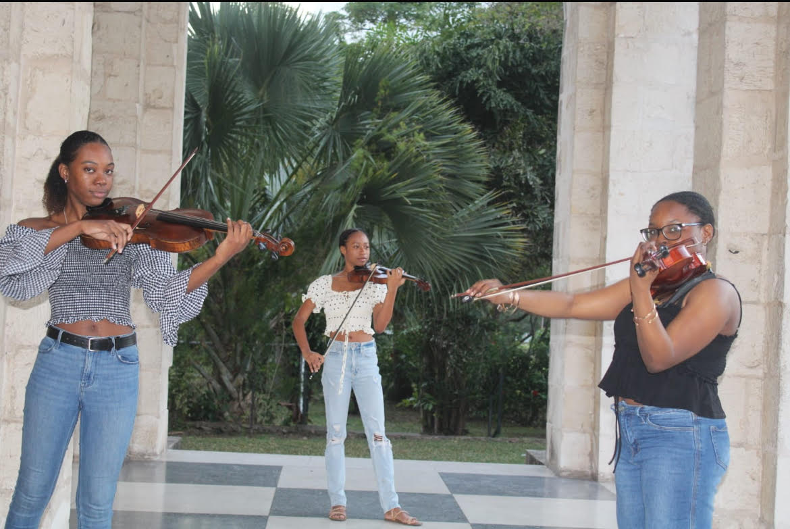

Book us!
The photo features three members of my string quartet, Taimes, which is available to perform at weddings, formal gatherings, and other special occasions. We take pride in bringing elegance and charm to every event with our live music, creating an atmosphere that is both memorable and refined. To book us, please contact us at 876-832-8638 or taimesmusicja@gmail.com for more details and availability.
We are a professional string quartet available to bring elegance and timeless music to your special day. Whether you’re planning a wedding, a formal event, or a sophisticated gathering, our ensemble provides the perfect live soundtrack to create a warm and memorable atmosphere. With a repertoire that spans classical favorites and contemporary selections, we tailor our performance to suit the mood of your occasion and leave a lasting impression on your guests.